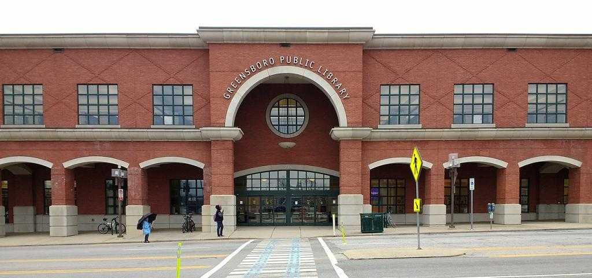
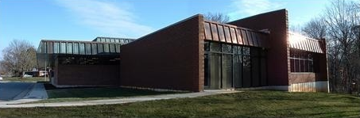

Greensboro Central Library
219 North Church Street
Greensboro, NC
Services: Book pickup, drop-off, community programs
Available books: 1,240
Featured genres: Fiction, biographies, and children's books
Browse books and connectConnect with your local library and discover, request, and manage your favorite books and resources more efficiently than ever before.
Sign In as a Customer Sign In as a ProviderDiscover a library, browse its available books, and connect with it to request a pickup.

219 North Church Street
Greensboro, NC
Services: Book pickup, drop-off, community programs
Available books: 1,240
Featured genres: Fiction, biographies, and children's books
Browse books and connect1901 W. Florida St.
Greensboro, NC
Services: Book pickup, book requests, reading programs
Available books: 875
Featured genres: Mystery, romance, and young adult books
Browse books and connect
1530 Benjamin Parkway
Greensboro, NC
Services: Book pickup, drop-off, community events
Available books: 963
Featured genres: Nonfiction, history, and educational books
Browse books and connectCreate a LibraryPal profile and connect with your local library.
Search and browse books available through local libraries.
Select an available book and request it from your local library.
Choose an available pickup date that works for you.
Pick up your book, enjoy your reading, and share your experience with other readers.